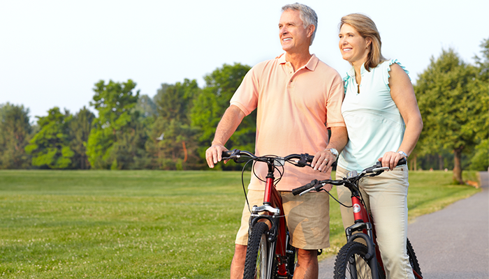

Как стать физически активным
Пошаговый план
Шаг первый
Получение одобрения врача. Осложнения сахарного диабета или проблемы с сердечно-сосудистой системой могут быть
противопоказанием к некоторым видам физических нагрузок, поэтому посоветуйтесь с врачом. Также перед началом нового
режима физической активности врач должен решить вопрос о необходимости проведения обследования сердечно-сосудистой и
дыхательной систем.
Помните, что при применении инсулина физическая активность может стать причиной развития гипогликемии, а при уровне
глюкозы крови выше 13-14 ммоль/л она противопоказана.
Шаг второй
Выбор наиболее приемлемого вида физической активности. Выберите то, что вам интересно, то, чем вы мечтали заняться (например, танцы), то, чем вы реально будете заниматься.
Шаг третий
Вместе с врачом поставить себе реальную цель. Например, начните с прогулок или упражнений по 10 минут 3 раза в неделю и, как только цель достигнута, увеличивайте их длительность, а затем количество в неделю.
Шаг четвертый
Иногда проще заниматься, если найти компанию, чтобы поддерживать мотивацию к физической активности.
Шаг пятый
Найти время. Если вы не можете выделить 30 минут на занятие, разбейте это время на три 10-минутных занятия.
Шаг шестой
Оставаться активным в течение всего дня.
Противопоказания к физической активности
Если у вас сахарный диабет 1 типа, вы регулярно проводите самоконтроль и владеете способами профилактики гипогликемии,
то можете заниматься любой физической активностью, в том числе спортом. При сахарном диабете 2 типа могут быть
дополнительные ограничения, обусловленные ишемической болезнью сердца, заболеваниями суставов или органов дыхания. Любая
серьезная физическая активность требует предварительного обследования и консультаций с врачом!
Ниже приведены состояния, при которых физическая активность может быть противопоказана или требует осторожности.
Временные противопоказания:
Соблюдения осторожности требуют: